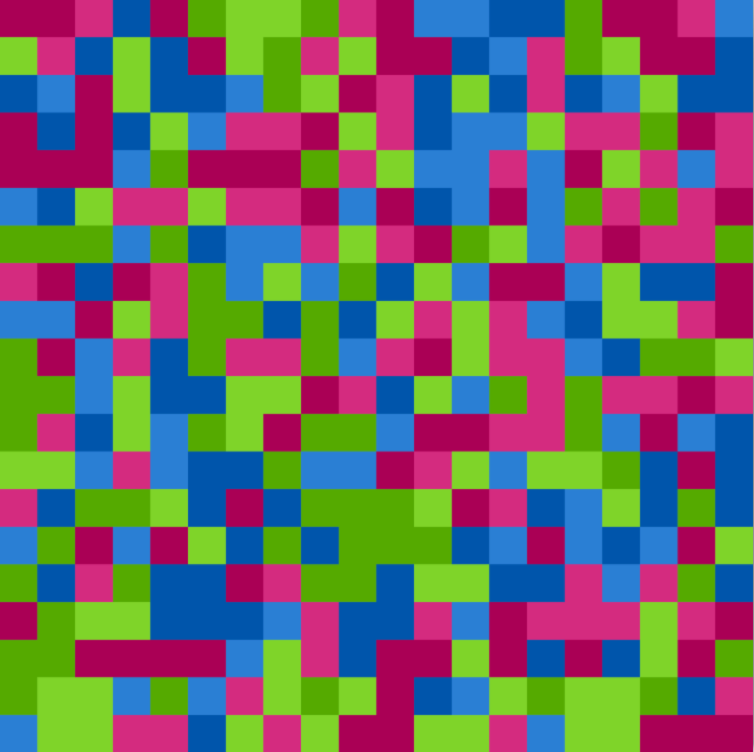

Introduction
I have a friend Amy who's an amazing and thoughtful artist. She's been working a series of paintings based on the random assignment of colors by assigning six different colors to the six sides of a die. She then rolls the die to determine the colos of blocks in a grid. Thens she paints the results on huge canvases. You can see more of her work here.

As she described this very time consuming but personal process, I couldn't help but think that the whole thing could be streamlined by a few lines of code.
Part of what made this project so much fun was working with an "art" person instead of a "tech" person". She was most interested in the easiest part of the program, assigning a number from one to six in each of the squares of a grid. Could I change the number of colors? Certainly! How about the size of the grid? Not a problem! She had almost no interest at all in what I saw as the crux of the project, turning the grid of numbers into a visual grid of colors. I had just recently learned how to use pygame, so most of the work was new to me.
Amy was very insistant that not only should the color of each block be assigned randomly, but the order that the blocks are colored should also be random. My first solution, to start at the top left and work my way through in order to the bottom right, was unacceptable. My next solution, to pick a block randomly and assign it a color if it didn't already have a color, and to skip it if it did, was almost as bad. So my final project selects a block randomly from a list of unassigned blocks, assigns it a color, and draws it to the screen.
An unintended consequence of this round about method is that the picture looks really cool while the program is running, and I hope I can figure out how to add it as a gif. If I wanted to find a moral from this story, I would say that by being careful about how the work is done, insead of focusing on the result, I created an even better project than I could have come up with on my own.
